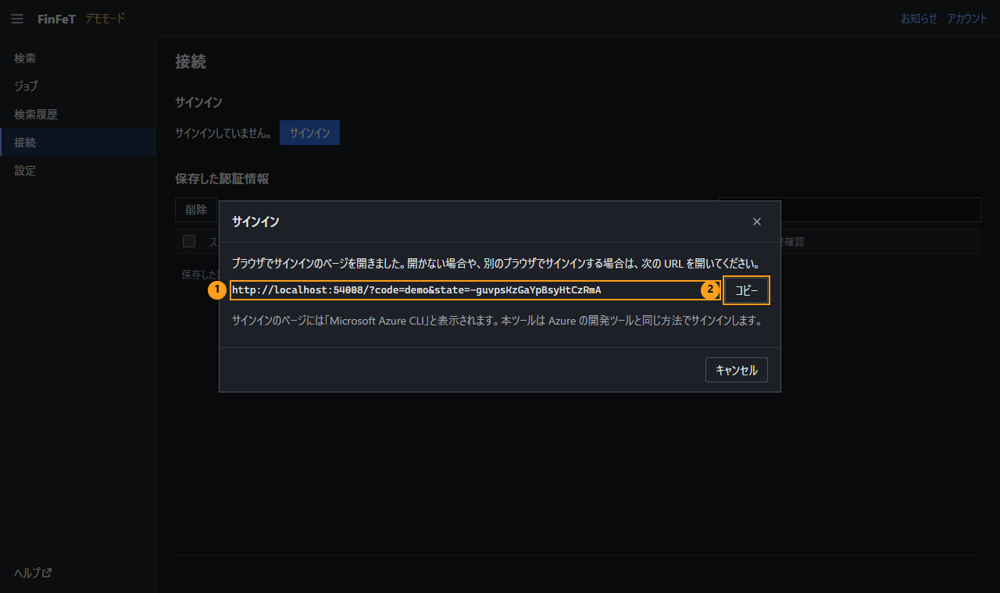
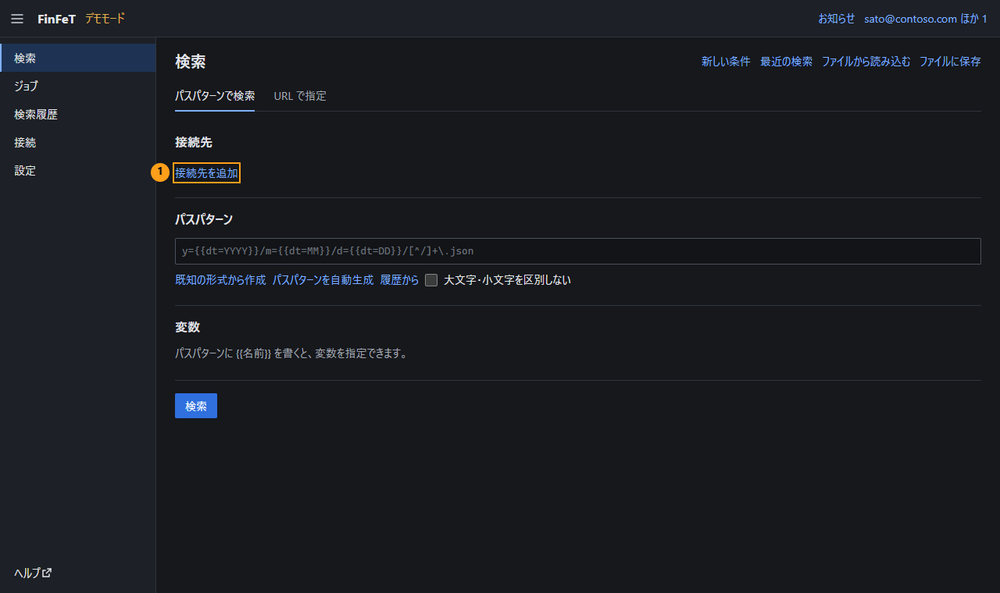
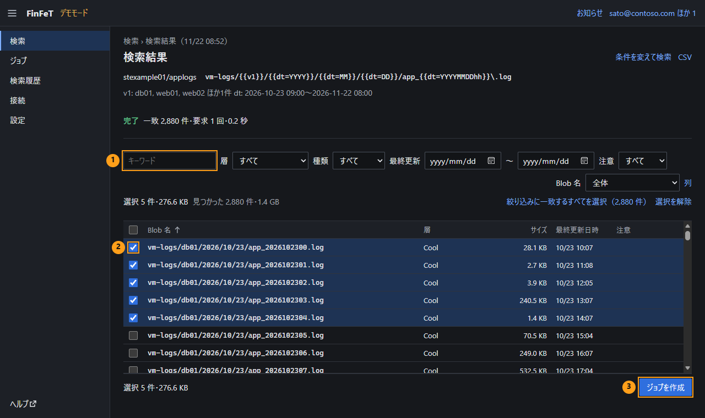
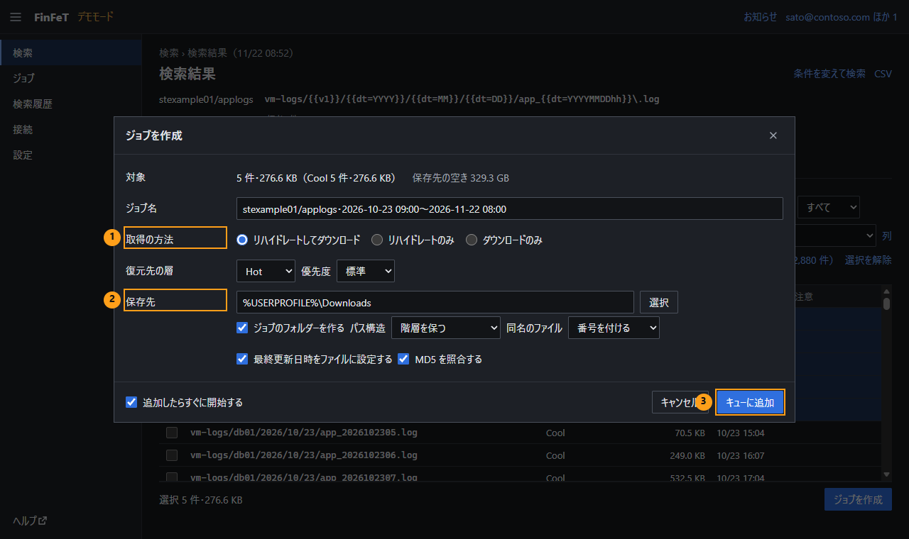
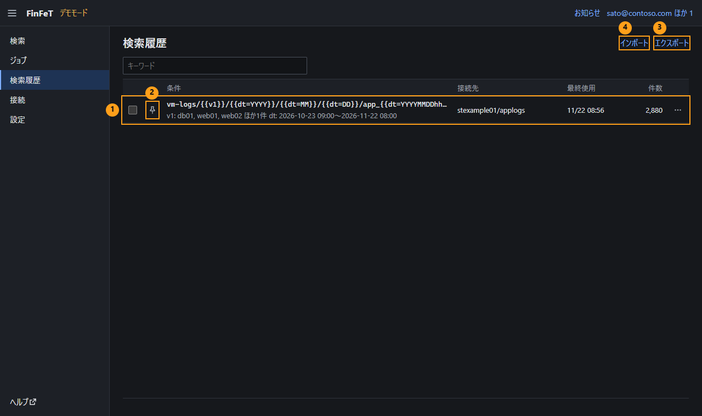

使い方
この説明書では、ストレージアカウントに保存したログを探して、パソコンにダウンロードするまでを、画面の順に説明します。画面の画像の1などの番号は、画像の下の説明の番号と対応しています。
画像は、Azure に接続しないで試せる「デモモード」の画面です（finfet-abs.bat --demo で起動します）。名前はすべて架空のものです。
1. サインインする
Microsoft のアカウント（Microsoft Entra ID）で Azure にサインインします。アクセスキー・SAS・接続文字列だけを使う場合は、サインインしなくてもかまいません（2. 接続先を追加するへ進んでください）。

- 画面の左の [接続] を押して接続のページを開き、[サインイン] を押します。

- ブラウザの新しいタブに、Microsoft のサインインのページが開きます。開かないときは、ここに表示された URL を開きます。
- 別のブラウザでサインインしたいときは、[コピー] で URL をコピーして、そのブラウザに貼り付けます。
サインインが終わると、ダイアログは自動で閉じます。サインインのページのタブは閉じてかまいません。
複数のアカウントを使う
仕事用と検証用など、複数のアカウントで同時にサインインできます。

- サインインしているアカウントの一覧です。「既定」のアカウントは、アカウントを指定していない接続先で使います。
- [既定にする] で、既定のアカウントを変えます。
- [アカウントを追加] で、別のアカウントでサインインします（アカウントを選ぶ画面が表示されます）。サインアウトは、アカウントごとにできます。
- 多要素認証などのため使えないテナント（組織）があるときに表示します。[このテナントにサインイン] を押すと、そのテナントにサインインし直します。
2. 接続先を追加する
「接続先」は、検索するストレージアカウントとコンテナーの組み合わせです。検索のページで追加します。

- 画面の左の [検索] を押して検索のページを開き、[接続先を追加] を押します。

- サインインしたアカウントで使えるストレージアカウントを、一覧から選びます（ふつうはこれを選びます）。
- アクセスキー・SAS URL・接続文字列を持っている場合は、それぞれを選んで貼り付けます。貼り付けた値は暗号化して保存します（データの取り扱い）。

- 複数のアカウントでサインインしているときは、使うアカウントを選びます。
- ストレージアカウントを選びます。キーワードで絞り込めます。
- 検索するコンテナーにチェックを入れます。複数選べます。
- [追加] を押すと、検索のページに接続先が加わります。
3. パスパターンを作る
「パスパターン」は、探したい Blob の名前の決まりです。たとえば vm-logs/web01/2026/11/21/app_2026112109.log のような名前のログなら、日付や VM の名前の部分を変数にして、まとめて探せます。
どう書けばよいか分からないときは、[パスパターンを自動生成] を使うと、コンテナーの Blob の名前を調べて、パスパターンの候補を作ります。

- パスパターンの欄です。自分で書くこともできます（パスパターンの書き方）。
- [パスパターンを自動生成] を押すと、次のダイアログが開きます。
- 診断設定のログなど、よく知られた形の Blob は、[既知の形式から作成] で一覧から選べます。

- Blob の名前を集める範囲を選びます。
- 「階層をたどって見本を集める」: フォルダーごとに一部の名前を集めます。Blob が多いコンテナーでも、すぐに終わります（ふつうはこれ）。
- 「先頭から指定した件数」: 名前の順に、指定した件数だけ集めます。
- 「すべての Blob」: すべての名前を集めます。Blob が多いと時間がかかりますが、Blob がある期間の最初と最後が正確に分かります。
- [実行] を押します。途中で [中止] もできます。
- パスパターンの候補が、Blob の件数の多い順に表示されます。下の行の「選択肢」は、値の種類が少ない部分（VM の名前など）を、選択肢の変数にしたものです。
- 使う候補の [使う] を押すと、パスパターンの欄に入ります。
4. 変数で絞り込む（日時・選択肢）
パスパターンの {{…}} の部分が「変数」です。変数ごとに、探したい値を指定します。

- 選択肢の変数は、キーワードを入れると、選択肢を絞り込めます。
- 探したい値にチェックを入れます（複数選べます）。[すべて選ぶ] [選択を外す] でまとめて変えられます。選択肢にない値は、下の欄に入れて追加できます。
- 日時の変数は、期間の始まりと終わりを入れます。「期間の入力」で、ローカル時刻と UTC のどちらで入れるかを選べます。
- 自動生成で日時の変数を作った場合は、Blob がある期間を表示します。「すべての Blob」で自動生成した場合は、この期間が最初から入っています。[この期間にする] で、いつでも戻せます。
- [検索] を押すと、検索を始めます。
5. 検索して、Blob を選ぶ
検索が終わると、検索結果のページが開きます。

- キーワード・層・種類・最終更新日時・注意で、検索結果を絞り込めます。表の見出しを押すと並べ替えます。
- ダウンロードしたい Blob にチェックを入れます。[絞り込みに一致するすべてを選択] で、絞り込んだ結果をまとめて選べます。
- 選んだら [ジョブを作成] を押します。
6. ジョブを作る（リハイドレートとダウンロード）
「ジョブ」は、選んだ Blob のリハイドレートとダウンロードをまとめたものです。

ダイアログで、次の項目を選びます。
| 項目 | 内容 |
|---|---|
| 取得の方法 |
「リハイドレートしてダウンロード」: Archive 層の Blob はリハイドレート（オンラインの層に戻すこと）を要求し、戻ったものから順にダウンロードします。ほかの層の Blob はすぐにダウンロードします。 「リハイドレートのみ」: リハイドレートだけを要求します。終わると「ダウンロード待ち」になり、後日ダウンロードできます（8）。 「ダウンロードのみ」: Archive 層の Blob はスキップします。 |
| 復元先の層・優先度 | リハイドレートした Blob を戻す層（Hot・Cool・Cold）と、優先度（標準・高）。高は早く終わりますが、料金が高くなります。 |
| 保存先 | ダウンロードしたファイルを置くフォルダー。「ジョブのフォルダーを作る」を選ぶと、ジョブごとにフォルダーを分けます。 |
| パス構造 | 「階層を保つ」（Blob の名前の / をフォルダーにします）・「名前にする」・「ファイル名だけ」・「指定する」から選びます。 |
| 同名のファイル | 保存先に同じ名前のファイルがあるときに、「番号を付ける」・「スキップ」・「上書き」のどれにするか。 |
[キューに追加] を押すと、ジョブがキュー（順番待ちの列）に入ります。
7. ジョブの進み具合を見る

- ジョブはキューの上から順に始まります。つまみ（⠿）をドラッグすると、順番を変えられます（キーボードでは Alt+↑ / Alt+↓）。
- チェックを入れたジョブを [開始] します。
- [一時停止] で止めます。[中止] すると、そのジョブは終了します。
前のジョブがリハイドレートの完了を待っている間は、次のジョブが進みます。ジョブの名前を押すと、ジョブの詳細のページを開きます。

- ジョブの状態です。
- ジョブの操作のボタンです（開始・一時停止・中止など。ジョブの状態によって変わります）。
- 「Blob」「検索条件」「取得の設定」「ログ」を切り替えて見られます。実行中は、ダウンロードの速さの上限（帯域）をその場で変えられます。
- Blob ごとの状態です。リハイドレート中の Blob は、[優先度を高にする] で優先度を上げられます（料金が高くなります）。
8. 後日のダウンロード、再開と再実行
後日のダウンロード
- 「リハイドレートのみ」のジョブは、リハイドレートが終わると「ダウンロード待ち」になり、画面の右上の「お知らせ」に表示します。
- ジョブの詳細のページで [ダウンロードを開始] を押します。保存先などは、このときに変えられます。
再開と再実行
終了したジョブの詳細のページに、次のボタンがあります。
| ボタン | 動き |
|---|---|
| [再開] | 同じジョブの、終わっていない Blob（エラー・中止・途中で止まったもの）だけを処理します。リハイドレートを要求済みの Blob は、要求し直しません。 |
| [すべて再実行] | 同じ Blob と取得の設定で、新しいジョブを作ります。元のジョブの記録は残ります。 |
| [同じ条件で検索] | 元のジョブの検索条件で、検索のページを開きます（新しく増えた Blob も対象になります）。 |
Blob の表で Blob を選んで [選択した Blob を再実行] を押すと、選んだ Blob だけで新しいジョブを作ります。
9. 検索履歴を使う

- 実行した検索が残ります。行の右の「…」の [検索のページで開く] で、同じ条件で検索のページを開きます。
- よく使う条件はピン留めすると、一覧の上に残ります。
- [エクスポート] で、検索条件をファイル（.finfet-abs.json）に書き出します。チェックを入れた行があればその行だけ、なければすべてを書き出します。ほかの人に渡せます。
- [インポート] で、書き出したファイルを読み込みます。
うまく動かないときは、困ったときはを見てください。